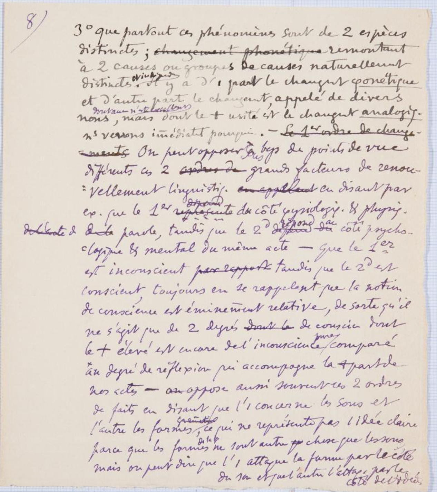

Gli appunti vennero scritti da Ferdinand De Saussure
e vennero parzialmente presentati durante le prime tre lezioni del corso di
fonetica greca e latina del 6, 10
e 13 novembre 1891 a Ginevra
ma probabilmente erano destinati alla pubblicazione di una brochure.
Il manoscritto originale venne acquisito dalla Biblioteca di Ginevra
come molti altri archivi dell'autore donati alla biblioteca in diversi lotti da
Jacques, Raymond,
Madame Bertrand e Claude De Saussure.
Questo manoscritto si compone di 3 parti, ognuna corrispondente a una prolusione ginevrina.
È possibile consultare il manoscritto codificato presso l'archivio online dell'Università di Pisa.
FRUIZIONE:
Opera ad accesso libero.
Materiale e supporto
MATERIALE E DIMENSIONE: Fogli di carta precisamente di 30 + 15 + 22 pagine, ovvero 67 pagine, + 1 foglietto.
CARATTERI: Scritto in caratteri corsivi, non sempre di facile comprensione in quanto si tratta
di appunti scritti a mano.
Alcune parole sono sottolineate e altre cancellate.
LUNGHEZZA: Le pagine hanno in media 20-30 righe, non considerando cancellature e aggiunte di
elementi esterni, note o correzioni.
Collocazione
Testi registrati nella Biblioteca di Ginevra.
STATO: Svizzera
Identificativo: BGE Ms.fr.3951/1.1-3
LEGENDA
Elemento terminologico: GIALLO
Francesismi: ARANCIONE
Aggiunte: ROSSO
Pagina 8

3° troisièmement, que partout ces phénomènes
sont de 2 deux espèces
distinctes; changement phonétique remontant
à 2deux causes
ou groupes de causes naturellement
distinctes et indépendantes.
Il y a d'une part le changement phonétique
et d'autre part le changement appelé de divers
noms dont aucun n'est excellent,
mais dont le +plus usité est le
changement analogique.
Nous verrons immédiatement pourquoi.
-Le premier ordre de change--ments
On peut opposer
sous beaucoup de points de vue
différents ces 2deuxordres degrands facteurs de renou-
vellement linguistique,
en disant par
ex.exemple
que le 1er premier représente le côté
physiologique et physique
dede laparole, tandis que le 2d second dépend du répond au côté psycho-logique & mental du même acte- que le 1erpremier
est inconscient par rapport
tandis que le 2d second est
conscient,
toujours en se rappelant que la notion
de conscience est éminemment relative, de sorte qu'il
ne s'agit que de 2deuxdegrés dunt le de conscience dont
le +plus élevé est encore de l'inconscience pure comparé
au degré de réflexion qui accompagne la
+partplupart de
nos actes-
on oppose aussi souvent ces 2deuxordres
de faits en disant que l'1un concerne les sons et
l'autre les formes grammaticales,
ce qui ne représente pas une idée claire
parce que les formes de la langue
ne sont autre chose que les sons
mais on peut dire que l'1un attaque la forme par le côté
du son et que l'autre l'attaque par le côte
de l'idée;
TRADUZIONE IN ITALIANO
in terzo luogo, che ovunque tali fenomeni sono di due specie distinte; risalenti a
due cause o gruppi di cause naturalmente distinte e indipendenti.
Vi è, da una parte, il cambiamento fonetico e dall'altra il cambiamento chiamato con
varie denominazioni, di cui nessuna è ottima, ma tra le quali la più usuale è quella
di 'cambiamento analogico'.
Vedremo subito il perchè.
Questi due grandi fattori di rinnovamento linguistico si possono opporre sotto vari
punti di vista differenti, dicendo per esempio che il primo rappresenta il lato fisiologico
e fisico della parole, mentre il secondo corrisponde al lato psicologico e mentale
dello stesso atto-,
che il primo è inconscio, mentre il secondo è cosciente,
ricordandosi sempre che la nozione di coscienza è eminentemente relativa, di modo
che non si tratta che di due gradi di coscienza dei quali il più elevato è ancora
incoscienza pura, se paragonato al grado di riflessione che accompagna la maggior
parte dei nostri atti-,
spesso si oppongono anche questi due ordini di fatti, dicendo che l'uno concerne i
suoni e l'altro le forme grammaticali,
il che non rappresenta un'idea chiara, perchè le forme della lingua non sono altra
cosa che i suoni,
ma si può dire che l'uno attacca la forma del lato del suono e l'altro l'attacca da
quello dell'idea;
Pagina 9
-on peut dire en outre que l'un représente une des opérations
purement mécaniques, c'est-à-dire
qui n'à jàmais un but assignalle n'os où on ne peut découvrir un ni but ni
intention, et l'autre des opé-rations intelligentes, où il est possible de
découvrir 1unbut et 1 sens.
donner 1 sutre, même très générale tt
L'observation et l'analyse de ces 2deux ordres de
phénomènes constituent l'occupation presque unique du
linguiste, sur quelque langue que porte son attention,
N ne peut aussi et cette tâche est sans fin même
sur
en se bornant à des périodes limitées.
Je ne puis donc
songer à entrer en ce moment dans une description
ou 1une classification
même absolument générale et approximative de tout ce qui
est contenu dans l'idée de changement phonétique et dans celle de
changement par analogie anal.
Quelques exemples en prenant d'abord le phén.phénomène d'analogie,
phén.phénomène de transf.transformation intelligente.
On ne peut mieux se rendre compte de la vivacité des faits de ce que c'est
qu'en écoutant parler quelques minutes un enfant de 3trois ou
4quatre ans.
Son langage et est un véritable tissu de forma-tions analogiques , qui nous font sourire, mais qui
offrent dans toute sa pureté et sa candeur le principe dud'oùdipe qui ne cesse d'être à l'œuvre ddans
l'hist.histoire des langues.
Venirai.
Comment je venirai.?
Pour cela il faut premièrement
que, l'enfant connaisse
venir et qu'il
associe ddans
son espritgrâce a l'idéè contenue
ddans venir et celle qu'il
a voulu veut exprimer;
mais cela ne suffit pas; il faut , 2° deuxièmement ,qu'il ait entendu
dire punir et
je te punirai ou
choisir[je choisirai]
Alors se produit le phénphénomène choi ch punir:pu
nirai=venir:venirai
Rien de +plusconséquent, rien de +pluslogique et de +plus juste que le
raisonnement
qui contuit àvenirai.
Remarquons tt de suite 1un des
caractères de ce phén.phénomène:Ce n'est pddans 1 un sens,
ce n'est pas 1 une transf.transformation
C'est 1 une création;-mais
d 1 aut en dernière
analyse ce n'est qu' 1une transf.transformation,parce que tous les éléments de
venirai
sont contenus et donnés
TRADUZIONE IN ITALIANO
si può dire inoltre che l'uno rappresenta operazioni puramente meccaniche, cioè in
cui non si può ritrovare nè scopo nè intenzione, e l'altro operazioni intelligenti,
in cui è possibile scoprire uno scopo e un senso.
L'osservazione e l'analisi di questi due ordini di fenomeni costituiscono l'occupazione
quasi unica del linguista, su qualsiasi lingua vanta la sua attenzione, e questo compito
è senza fine, anche attenendosi a periodi limitati.
Non posso dunque minimamente pensare di addentrarmi in una descrizione o una classificazione
sia pure assolutamente generale e approssimativa di tutto ciò che è contenuto nell'idea
di cambiamento fonetico e in quella di cambiamento per analogia.
Facciamo alcuni esempi, prendendo anzitutto il fenomeno d'analogia, il fenomeno di
trasformazione intelligente
Il modo migliore per rendersi conto di ciò che esso sia è sentir parlare per qualche
minuto un bambino di tre o quattro anni.
Il suo linguaggio è un vero e proprio tessuto di formazioni analogiche, che ci fanno
sorridere, ma che offrono in tutta la sua purezza e il suo candore il principio che
non cessa d'essere all'opera nella storia delle lingue.
Venirai. Come je venirai?
Perchè ciò avvenga bisogna che, in primo luogo, il bambino conosca venir e che associ
nella sua mente l'idea contenuta in venir e quella che egli vuole esprimere;
ma non basta; bisogna che, in secondo luogo, egli abbia sentito dire punir e je te
punirei o choisir [je choisirai]
Allora si produce il fenomeno punir:punirai=venir:venirai.
Niente di più conseguente, niente di più logico e di più giusto del ragionamento che
porta a venirai.
Rimarchiamo subito uno dei caratteri di questo fenomeno: in un certo senso, non è
una trasformazione, è una creazione,
ma in ultima analisi non è che una trasformazione, perchè tutti gli elementi di venirai
sono contenuti e dati
Alcune parole chiave
Fenomeno: ciò che appare, che è conoscibile attraverso i sensi.
Cambiamento fonetico: si parla di mutamento fonetico quando ci si trova di fronte
a un cambiamento di abitudine nell'articolare un suono.
Denominazione: nome stesso con cui una persona o una cosa viene indicata.
Linguistico: che riguarda la lingua, il linguaggio, come fatto sociale, o particolari
aspetti, caratteri e manifestazioni della lingua.
Fisiologico: relativo alla fisiologia come scienza che studia le funzioni organiche
degli esseri viventi.
Fisico: l’aggettivo fisico si usa per indicare ciò che è attinente alla natura e ai
suoi fenomeni e anche alla scienza che li studia, la fisica (ricerche fisiche). Si
dice inoltre di ciò che è relativo al corpo umano.
Parole: l'atto di 'parole'è un fatto individuale, perché è rappresentato dalle singole
produzioni di ognuno, a tutti i livelli linguistici; è la concretizzazione della 'langue'.
Psicologico: relativo alla psicologia, che riguarda o interessa la psicologia; che
riguarda la conoscenza, le manifestazioni, i processi e i meccanismi della psiche.
Inconscio: di fenomeno interno (impulso, inclinazione, istinto, atto, ecc.) che non
giunge a livello della coscienza; o, più genericam., di processo psichico di cui il
soggetto non è consapevole.
Cosciente: che ha coscienza, che è consapevole delle proprie azioni.
Nozione: elemento fondamentale, di base, per l’apprendimento di una disciplina.
Suono: la causa delle sensazioni acustiche, consistente in vibrazioni di un mezzo
(per lo più l’aria), che possono essere eccitate in esso o ad esso trasmesse dalle
vibrazioni di un corpo, e che a loro volta eccitano l’orecchio.
Forme grammaticali: verbo, sostantivo, congiunzione, interiezione, aggettivo, avverbio,
articolo, aggettivo numerale, preposizione e pronome.
Lingua: Sistema di suoni articolati distintivi e significanti (fonemi), di elementi
lessicali, cioè parole e locuzioni (lessemi e sintagmi), e di forme grammaticali (morfemi).
Senso: è l'oggetto dell'interpretazione del testo.
Analisi: scomposizione di un tutto, concreto o astratto, nelle parti che lo costituiscono.
Linguista: chi si dedica allo studio delle lingue (o anche soltanto, o in modo specifico,
della propria lingua), soprattutto da un punto di vista teorico, sistematico e storico;
studioso di linguistica (in questo sign., è oggi sinon. più com. di glottologo)
Classificazione: operazione, effetto, modo del classificare; divisione o distribuzione
in classi, cioè in categorie.
Ragionamento: nella logica antica, ogni processo discorsivo della mente o ragione,
che, muovendo da alcune premesse, perviene a una conclusione.
Bibliografia
Ferdinand De Saussure, Tullio De Mauro, Corso di linguistica generale,
Roma
-
Bari
- 1976.
Alessandro Chidichimo, Cahiers Ferdinand de Saussure,
Ginevra
- 2009.
Riferimenti
Edizione digitale - febbraio 2022
Progetto a cura di: Aurora Giardina e Costanza Pucci